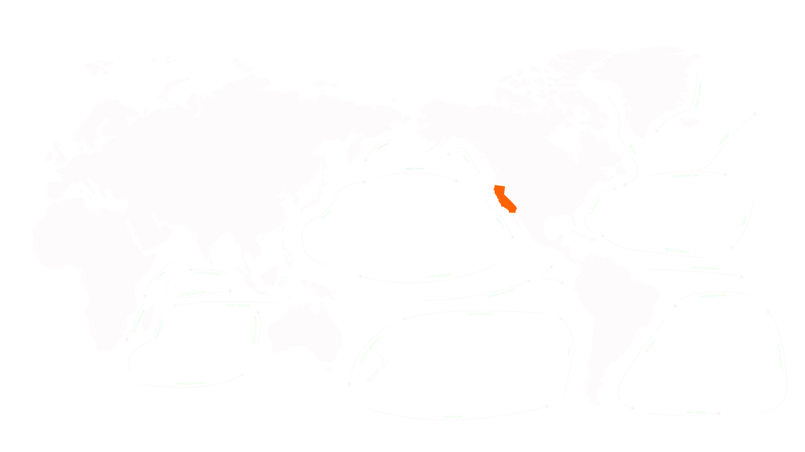

Plastic by mass of the GPGP
Equivalent to 500 jumbo jects
80,000 tonnes
Plastic by particle count of GPGP
Equivalent to 250 pieces of debris for every human
1.8 trillion
The Great Pacific Garbage Patch (GPGP)
is the largest of the five offshore plastic accumulation zones
located in the Pacific Ocean.
Located in ocean gyres, which are systems of circular ocean currents, garbage patches could have a major impact on our planet's future. Among the five biggest ocean garbage patches, the Great Pacific garbage patch is the biggest and the most problematic with pollution levels increasing exponentially.
It is estimated that 1.15 to 2.41 million tonnes of plastic are entering the Pacific ocean each year from rivers.
Once these plastics enter the gyre, they are unlikely to leave the area until they degrade into smaller microplastics under the effects of sun, waves and marine life. As more and more plastics are discarded into the environment, microplastic concentration in the Great Pacific Garbage Patch will only continue to increase.

california
Great Pacific
North Atlantic
South Atlantic
South Pacific
Indian Ocean
The GPGP covers 1.6 million square kilometers,
an area four times the size of California.
Hover each ocean gyres (circles) to see surface area.
Zoom to see more info